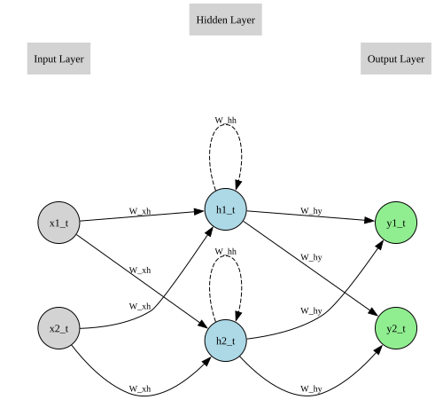

import pandas as pd
import torch
import torch.nn as nn
import torch.optim as optim
import matplotlib.pyplot as plt
import graphviz
from graphviz import Digraph
from IPython.display import display, MarkdownSimple Recurrent Neural Network
Packages
Introduction
In this notebook, we explore one full forward pass of a simple recurrent neural network (RNN). The network architecture consists of:
- \(D\) input neurons
- 1 hidden layer with \(M\) recurrent neurons and \(\tanh\) activation
- \(N\) output neurons (no activation, suitable for regression)
We manually specify the weights, biases, and learning rate.
Neural Network Setup
We consider a simple recurrent neural network with \(D\) input neurons, 1 hidden layer with \(M\) recurrent neurons, and \(N\) output neurons.
Input Vector
At time step \(t\) the input vector is a \(D\)-dimensional column vector:
\[ x_t \in \mathbb{R}^D, \quad x_t = \begin{bmatrix} x_{1,t} \\ x_{2,t} \\ \vdots \\ x_{D,t} \end{bmatrix} \]
Output Layer
The output vector is \(N\)-dimensional:
\[ y_t \in \mathbb{R}^N, \quad y_t = \begin{bmatrix} y_{1,t} \\ y_{2,t} \\ \vdots \\ y_{N,t} \end{bmatrix} \]
Given by:
\[ y_t = W_{hy} h_t + b_y \]
Where: - \(W_{hy} \in \mathbb{R}^{N \times M}\) (hidden-to-output weights)
- \(b_y \in \mathbb{R}^{N \times 1}\) (output bias)
Target Function
The target output vector is defined as:
\[ y_t^{\text{target}} \in \mathbb{R}^N, \quad y_t^{\text{target}} = \begin{bmatrix} y_{1,t}^{\text{target}} \\ y_{2,t}^{\text{target}} \\ \vdots \\ y_{N,t}^{\text{target}} \end{bmatrix} \]
Loss Function
We use the sum of squared errors (with factor $ $):
\[ L_t = \tfrac{1}{2} \left\| y_t - y_t^{\text{target}} \right\|^2 \]
Over a sequence:
\[ L = \sum_t L_t \]
Diagram
The RNN can be represented diagrammatically. For simplicity assume \(D=2\), \(M=2\) and \(N=2\):
def draw_neural_net():
dot = Digraph(format='png')
dot.attr(rankdir='LR', nodesep='1.0', ranksep='1.2')
dot.attr('node', shape='circle', style='filled', fontsize='12')
# ---- Nodes ----
# Inputs (D = 2)
dot.node('x2_t', 'x2_t', fillcolor='lightgray')
dot.node('x1_t', 'x1_t', fillcolor='lightgray')
# Hidden layer (keep h1 above h2 by declaring first)
dot.node('h2_t', 'h2_t', fillcolor='lightblue')
dot.node('h1_t', 'h1_t', fillcolor='lightblue')
# Outputs
dot.node('y1_t', 'y1_t', fillcolor='lightgreen')
dot.node('y2_t', 'y2_t', fillcolor='lightgreen')
# ---- Layer grouping labels ----
with dot.subgraph() as s:
s.attr(rank='same')
s.node('input_label', label='Input Layer', shape='plaintext', fontsize='12')
s.edge('input_label', 'x1_t', style='invis')
s.edge('input_label', 'x2_t', style='invis')
with dot.subgraph() as s:
s.attr(rank='same')
s.node('hidden_label', label='Hidden Layer', shape='plaintext', fontsize='12')
s.edge('hidden_label', 'h1_t', style='invis')
s.edge('hidden_label', 'h2_t', style='invis')
with dot.subgraph() as s:
s.attr(rank='same')
s.node('output_label', label='Output Layer', shape='plaintext', fontsize='12')
s.edge('output_label', 'y1_t', style='invis')
s.edge('output_label', 'y2_t', style='invis')
# ---- Edges ----
# Inputs → Hidden (W_xh)
for x in ['x1_t', 'x2_t']:
for h in ['h1_t', 'h2_t']:
dot.edge(x, h, label='W_xh', fontsize='10')
# Recurrent self-loops (W_hh)
dot.edge('h1_t', 'h1_t', label='W_hh', fontsize='10', style='dashed')
dot.edge('h2_t', 'h2_t', label='W_hh', fontsize='10', style='dashed')
# Hidden → Output (W_hy)
for h in ['h1_t','h2_t']:
for y in ['y1_t','y2_t']:
dot.edge(h, y, label='W_hy', fontsize='10')
return dot
# Display inline
display(draw_neural_net())
Backpropagation Equations
We now compute the backpropagation equations:
Backpropagate to Output Layer
\[ \frac{\partial L}{\partial y_t} = y_t - y_t^{\text{target}} = e_t \in \mathbb{R}^N \]
Gradients for Output Layer Parameters
Weights:
\[ \frac{\partial L}{\partial W_{hy}} = \sum_t e_t h_t^\top \quad \in \mathbb{R}^{N \times M} \]
Biases:
\[ \frac{\partial L}{\partial b_y} = \sum_t e_t \quad \in \mathbb{R}^N \]
Backpropagate to Hidden Layer
Gradient w.r.t. hidden activations:
\[ g_t = \frac{\partial L}{\partial h_t} = W_{hy}^\top e_t + W_{hh}^\top \delta_{t+1} \quad \in \mathbb{R}^M \]
Pre-activation gradient:
\[ \delta_t = \frac{\partial L}{\partial a_t} = g_t \odot (1 - h_t \odot h_t) \quad \in \mathbb{R}^M \]
Gradients for Hidden Layer Parameters
Input-to-hidden weights:
\[ \frac{\partial L}{\partial W_{xh}} = \sum_t \delta_t x_t^\top \quad \in \mathbb{R}^{M \times D} \]
Recurrent hidden-to-hidden weights:
\[ \frac{\partial L}{\partial W_{hh}} = \sum_t \delta_t h_{t-1}^\top \quad \in \mathbb{R}^{M \times M} \]
Hidden bias:
\[ \frac{\partial L}{\partial b_h} = \sum_t \delta_t \quad \in \mathbb{R}^M \]
Update Equations
After computing the gradients of the loss function with respect to all parameters, we update the weights and biases using gradient descent with learning rate \(\eta\):
Output layer weights and biases:
\[ W_{hy} \leftarrow W_{hy} - \eta \cdot \frac{\partial L}{\partial W_{hy}} \]
\[ b_y \leftarrow b_y - \eta \cdot \frac{\partial L}{\partial b_y} \]
Hidden layer weights and biases:
Input-to-hidden:
\[ W_{xh} \leftarrow W_{xh} - \eta \cdot \frac{\partial L}{\partial W_{xh}} \]
Recurrent hidden-to-hidden:
\[ W_{hh} \leftarrow W_{hh} - \eta \cdot \frac{\partial L}{\partial W_{hh}} \]
Hidden bias:
\[ b_h \leftarrow b_h - \eta \cdot \frac{\partial L}{\partial b_h} \]
Initializing the Neural Network
We now initialize the neural network and choose a learning rate. Again, for simplicity, assume \(D=2\), \(M=2\) and \(N=2\):
Input
At time step \(t=0\), the input vector is:
\[ x_0 = \begin{bmatrix} 0.0 \\ 0.0 \end{bmatrix} \]
At time step \(t=1\), the input vector is:
\[ x_1 = \begin{bmatrix} 1.0 \\ 2.0 \end{bmatrix} \]
The initial hidden state is zero:
\[ h_0 = \begin{bmatrix} 0.0 \\ 0.0 \end{bmatrix} \]
Target
The target output vector is defined in general as:
\[ y_t^{\text{target}} = \begin{bmatrix} x_{1,t} \\ x_{2,t-1} \end{bmatrix} \]
For \(t=1\) we have \(x_{1,1} = 1.0\) and \(x_{2,0} = 0.0\). Therefore:
\[ y_1^{\text{target}} = \begin{bmatrix} 1.0 \\ 0.0 \end{bmatrix} \]
Parameters
Input-to-hidden weights:
\[ W_{xh} = \begin{bmatrix} 0.5 & -0.2 \\ -0.3 & 0.4 \end{bmatrix} \]
Hidden-to-hidden weights:
\[ W_{hh} = \begin{bmatrix} 0.1 & 0.2 \\ -0.4 & 0.3 \end{bmatrix} \]
Hidden bias:
\[ b_h = \begin{bmatrix} 0.0 \\ 0.0 \end{bmatrix} \]
Hidden-to-output weights:
\[ W_{hy} = \begin{bmatrix} 0.2 & -0.1 \\ 0.4 & 0.3 \end{bmatrix} \]
Output bias:
\[ b_y = \begin{bmatrix} 0.0 \\ 0.0 \end{bmatrix} \]
Learning Rate
We use a learning rate of:
\[ \eta = 0.01 \]
Running the Neural Network For One Iteration
We now run the neural network for a single iteration.
# use double precision for neat numeric agreement
torch.set_default_dtype(torch.float64)# number of input neurons, hidden neurons and output neurons
D, M, N = 2, 2, 2
# learning rate
eta = 0.01# inputs
x0 = torch.tensor([0.0, 0.0]) # not needed for the t=1 loss, here for completeness
x1 = torch.tensor([1.0, 2.0])# initial hidden state
h0 = torch.zeros(M)# target function y_t^target = [x_{1,t}, x_{2,t-1}]
y1_target = torch.tensor([1.0, 0.0])# parameters
# requires_grad=True tells pytorch to track oprations on this tensor so as to later be able to compute gradients
Wxh = torch.tensor([[ 0.5, -0.2],
[-0.3, 0.4]], requires_grad=True)
Whh = torch.tensor([[ 0.1, 0.2],
[-0.4, 0.3]], requires_grad=True)
bh = torch.tensor([0.0, 0.0], requires_grad=True)
Why = torch.tensor([[ 0.2, -0.1],
[ 0.4, 0.3]], requires_grad=True)
by = torch.tensor([0.0, 0.0], requires_grad=True)# keep copies of initial params for manual update
Wxh0, Whh0, bh0, Why0, by0 = Wxh.clone().detach(), Whh.clone().detach(), bh.clone().detach(), Why.clone().detach(), by.clone().detach()# forward pass at t = 1
# a1 = Wxh x1 + Whh h0 + bh ; h1 = tanh(a1) ; y1 = Why h1 + by
a1 = Wxh @ x1 + Whh @ h0 + bh
h1 = torch.tanh(a1)
y1 = Why @ h1 + by# loss: L1 = 0.5 * || y1 - y1_target ||^2
e1 = y1 - y1_target
L = 0.5 * torch.sum(e1**2)print("Forward results:")
print("a1:", a1)
print("h1:", h1)
print("y1:", y1)
print("Loss L:", L.item())Forward results:
a1: tensor([0.1000, 0.5000], grad_fn=<AddBackward0>)
h1: tensor([0.0997, 0.4621], grad_fn=<TanhBackward0>)
y1: tensor([-0.0263, 0.1785], grad_fn=<AddBackward0>)
Loss L: 0.5425549745559692# apply the chain rule to compute the gradient of L with respect to every tensor in the graph that has requires_grad=True
# stores those gradients in the .grad attribute of each such tensor
L.backward()# store the gradients of the parameters computed by pytorch
gr_Why_autograd = Why.grad.clone()
gr_by_autograd = by.grad.clone()
gr_Wxh_autograd = Wxh.grad.clone()
gr_Whh_autograd = Whh.grad.clone()
gr_bh_autograd = bh.grad.clone()print("\nAutograd gradients:")
print("dL/dWhy:\n", gr_Why_autograd)
print("dL/dby:\n", gr_by_autograd)
print("dL/dWxh:\n", gr_Wxh_autograd)
print("dL/dWhh:\n", gr_Whh_autograd)
print("dL/dbh:\n", gr_bh_autograd)
Autograd gradients:
dL/dWxh:
tensor([[-0.1325, -0.2651],
[ 0.1228, 0.2457]])
dL/dWhh:
tensor([[-0., -0.],
[0., 0.]])
dL/dbh:
tensor([-0.1325, 0.1228])
dL/dWhy:
tensor([[-0.1023, -0.4743],
[ 0.0178, 0.0825]])
dL/dby:
tensor([-1.0263, 0.1785])# manually compute the gradients
# e1 = y1 - y_target
# dL/dWhy = e1 h1^T
# dL/dby = e1
# g1 = Why^T e1 (no future step, so + W_hh^T δ2 = 0)
# δ1 = (1 - h1 ⊙ h1) ⊙ g1
# dL/dWxh = δ1 x1^T
# dL/dWhh = δ1 h0^T (h0 = 0 -> zero matrix)
# dL/dbh = δ1
gr_Why_manual = torch.outer(e1, h1)
gr_by_manual = e1.clone()
g1 = Why0.T @ e1
delta1 = (1.0 - h1*h1) * g1
gr_Wxh_manual = torch.outer(delta1, x1)
gr_Whh_manual = torch.outer(delta1, h0)
gr_bh_manual = delta1.clone()print("\nManual gradients:")
print("dL/dWhy:\n", gr_Why_manual)
print("dL/dby:\n", gr_by_manual)
print("dL/dWxh:\n", gr_Wxh_manual)
print("dL/dWhh:\n", gr_Whh_manual)
print("dL/dbh:\n", gr_bh_manual)
Manual gradients:
dL/dWxh:
tensor([[-0.1325, -0.2651],
[ 0.1228, 0.2457]], grad_fn=<MulBackward0>)
dL/dWhh:
tensor([[-0., -0.],
[0., 0.]], grad_fn=<MulBackward0>)
dL/dbh:
tensor([-0.1325, 0.1228], grad_fn=<CloneBackward0>)
dL/dWhy:
tensor([[-0.1023, -0.4743],
[ 0.0178, 0.0825]], grad_fn=<MulBackward0>)
dL/dby:
tensor([-1.0263, 0.1785], grad_fn=<CloneBackward0>)# function to check equality of gradients
def chk(name, a, b, tol=1e-12):
ok = torch.allclose(a, b, atol=tol, rtol=0)
print(f"{name}: match = {ok}")
if not ok:
print(" autograd:\n", a)
print(" manual:\n", b)print("\nGradient checks (autograd vs manual):")
chk("dL/dWhy", gr_Why_autograd, gr_Why_manual)
chk("dL/dby ", gr_by_autograd, gr_by_manual)
chk("dL/dWxh", gr_Wxh_autograd, gr_Wxh_manual)
chk("dL/dWhh", gr_Whh_autograd, gr_Whh_manual)
chk("dL/dbh ", gr_bh_autograd, gr_bh_manual)
Gradient checks (autograd vs manual):
dL/dWxh: match = True
dL/dWhh: match = True
dL/dbh : match = True
dL/dWhy: match = True
dL/dby : match = True# update parameters using pytorch
with torch.no_grad():
Why_updated = Why - eta * gr_Why_autograd
by_updated = by - eta * gr_by_autograd
Wxh_updated = Wxh - eta * gr_Wxh_autograd
Whh_updated = Whh - eta * gr_Whh_autograd
bh_updated = bh - eta * gr_bh_autograd# manually update parameters
Wxh_manual_upd = Wxh0 - eta * gr_Wxh_manual
Whh_manual_upd = Whh0 - eta * gr_Whh_manual
bh_manual_upd = bh0 - eta * gr_bh_manual
Why_manual_upd = Why0 - eta * gr_Why_manual
by_manual_upd = by0 - eta * gr_by_manualprint("\nUpdate checks (torch.no_grad vs manual):")
chk("Wxh", Wxh_updated, Wxh_manual_upd)
chk("Whh", Whh_updated, Whh_manual_upd)
chk("bh ", bh_updated, bh_manual_upd)
chk("Why", Why_updated, Why_manual_upd)
chk("by ", by_updated, by_manual_upd)
Update checks (torch.no_grad vs manual):
Wxh: match = True
Whh: match = True
bh : match = True
Why: match = True
by : match = Trueprint("\nNew parameters after one GD step (should match):")
print("Wxh (new):\n", Wxh_updated)
print("Whh (new):\n", Whh_updated)
print("bh (new):\n", bh_updated)
print("Why (new):\n", Why_updated)
print("by (new):\n", by_updated)
New parameters after one GD step (should match):
Wxh (new):
tensor([[ 0.5013, -0.1973],
[-0.3012, 0.3975]])
Whh (new):
tensor([[ 0.1000, 0.2000],
[-0.4000, 0.3000]])
bh (new):
tensor([ 0.0013, -0.0012])
Why (new):
tensor([[ 0.2010, -0.0953],
[ 0.3998, 0.2992]])
by (new):
tensor([ 0.0103, -0.0018])